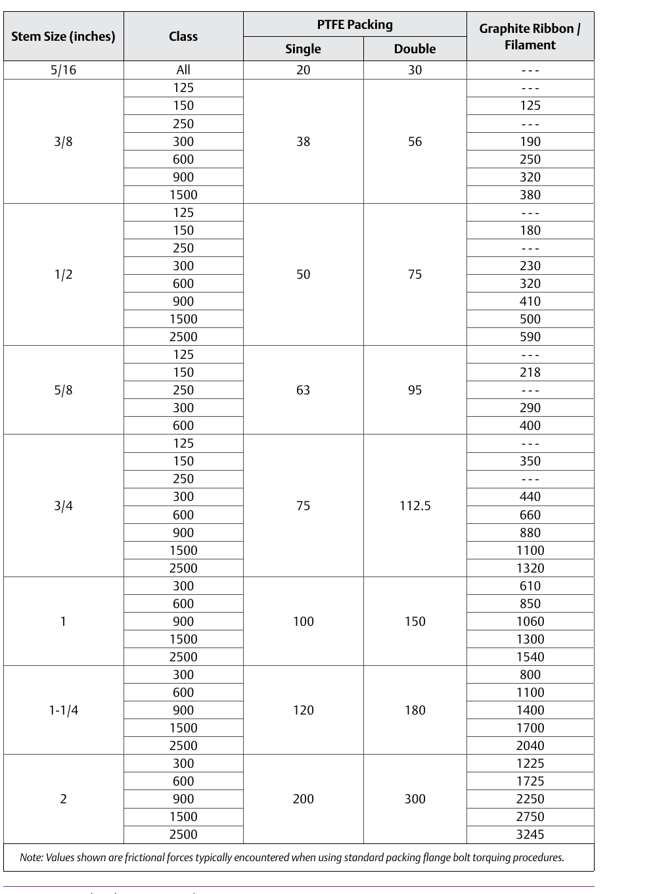

Worked Example: Actuator Force Margin



Verify actuator force margin for the same service case: read seat load off the seat-load graph, read packing friction off the friction-values table, compute required force including unbalance area, and compare against the actuator's rated output at its operating supply pressure — a margin failure here means a bigger actuator, not a different Cv. Component Index: cvh-cmp-unbalance-area-table, cvh-cmp-seat-load-graph, cvh-cmp-packing-friction-values-table.